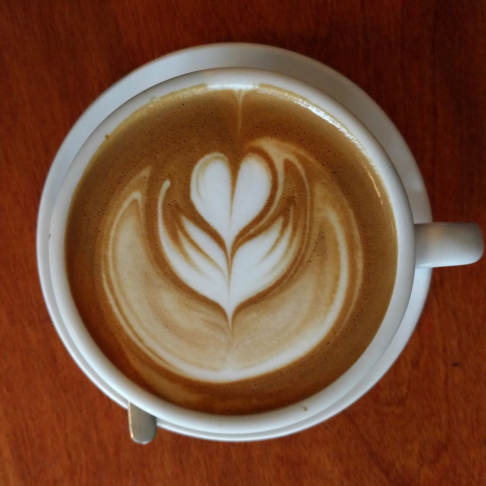
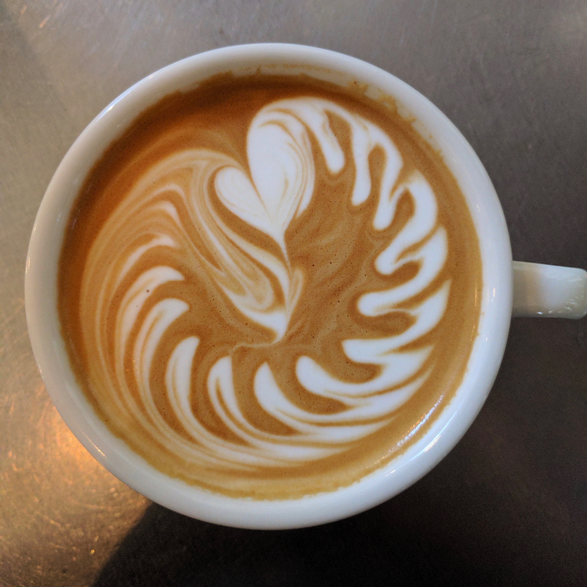

Jan

The first non-holiday monday of the new year is where my little programming journey begins, at Epicodus. Epicodus is a Portland-based bootcamp with different tracks to choose from, with it's defining characterist its focus on pair programming. I was in the C# track, and, with one of my close friends, started a few rough weeks of HTML, CSS, and JavaScript.
Feb
Turns out pair programming as the only means of education does not jive with me! Although I found the material at Epicodus interesting, it was very quickly obvious the teaching style just did not work for my learning style. On February 13, I left the program.
On February 16, I applied to Ada.
April
It's the middle of April. I check my email. I see it's from Ada Developers Academy. I read it. My heart stopped.
I. WAS. ACCEPTED!
May
On May 12, Jamey and I have our wedding reception with friends and family from around the world. It was the second-most magical day of my life, the first being our actual elopment last August at the Seattle Municipal Courthouse.
Jamey has been my number one supporter in my education and pursuit of a career in programming. He has taken on so many extra responsibilities and costs for us to make sure I can get through this program.
August
It's finally here! The program has finally started! I was very nervous for the first day and could hardly sleep. As soon as I stepped in, though, I knew I was in the right place. The folks around me were immediately welcoming, even when they looked just as nervous as I felt. There was a buzz among the new students.
September


After several years in coffee, I finally quit my barista job. I just couldn't handle fulltime school and partime work.
I love coffee. I love the history of it, the science of it, the social and community aspects of it. From growing to harvesting to processing to roasting to brewing, I love it all.
Dang it, though. I am so glad to be out of the service industry! So glad to be able to focus on school.